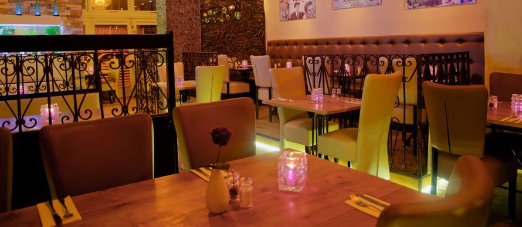
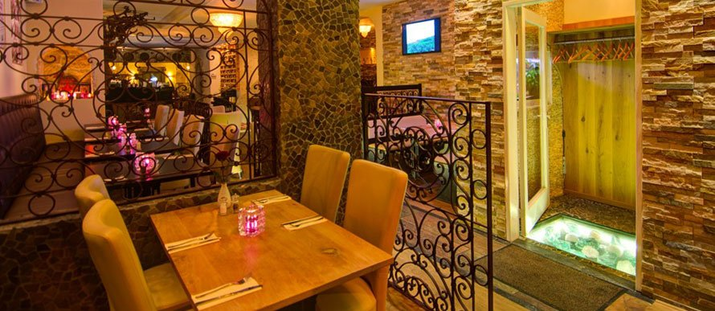
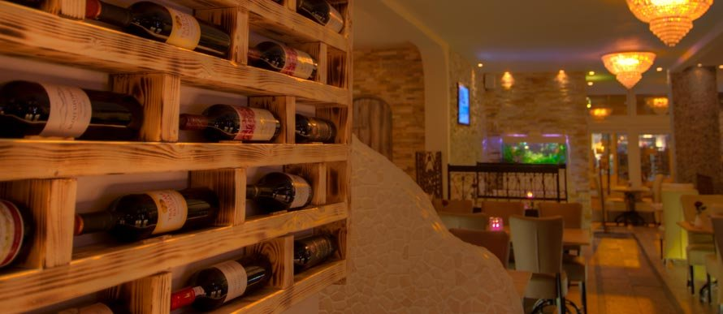
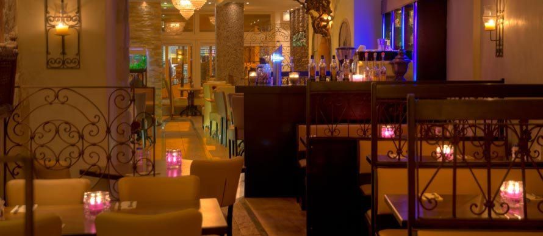
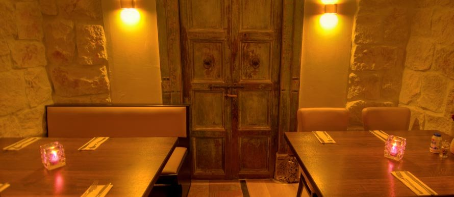
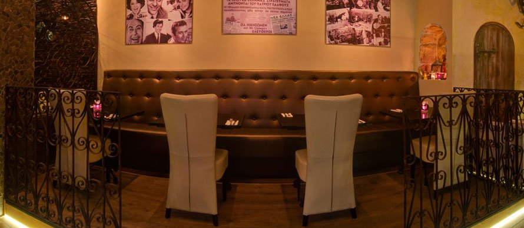
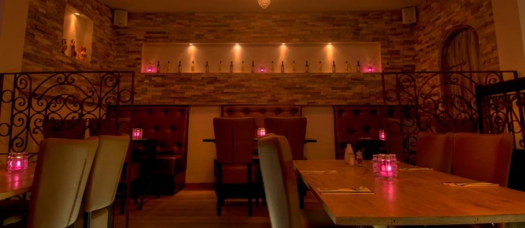
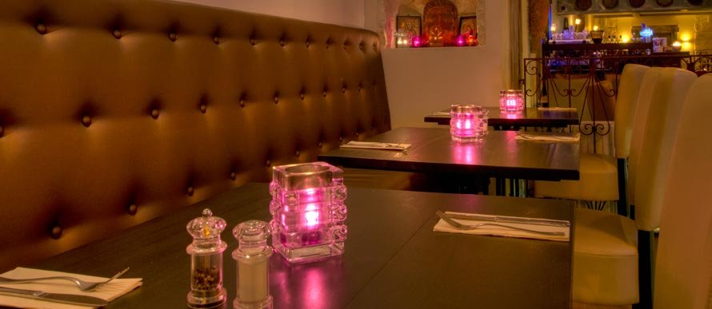
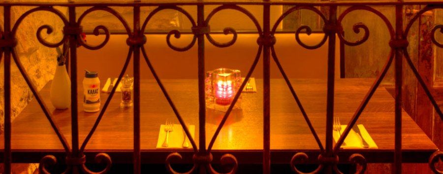

Reserveren
Voor reserveringen belt u 035 - 5422493, bereikbaar van maandag t/m zondag. Ons e-mailadres is niet voor reserveringen.
Grieks specialiteitenrestaurant in het centrum van Vorstelijk Baarn
Traditionele Griekse keuken in een modern jasje. Griekse gastvrijheid en lekker eten staan bij ons nog steeds voorop.
Grieks specialiteitenrestaurant Olympia zit sinds 1986 in het centrum van Baarn. Als familiebedrijf met jarenlange ervaring maken wij van elke gelegenheid een bijzondere belevenis.
We laten u graag kennismaken met onze authentieke Griekse gerechten. We blijven kritisch kijken naar kwaliteit en service en luisteren goed naar wat onze gasten zeggen, ook naar onze kleinste gasten. Kinderen zijn in Griekenland overal en altijd welkom, en bij ons dus ook.
In de zomer van 2011 hebben we het interieur helemaal vernieuwd: een hedendaagse uitstraling, met behoud van de Griekse gezelligheid en kindvriendelijkheid.

Uiteraard kunt u bij ons ook eten afhalen. Bel om een bestelling te plaatsen en noem het nummer van het gerecht.
035 - 5422493Keuken open woensdag t/m zondag, 17.00 – 21.30
Prijzen in euro's, afhaalmenu 2025. Afhaalmenu als pdf
Wilt u ook een gezellige avond beleven in ons sfeervolle restaurant? Reserveer vandaag nog: (035) 5422493.








Voor reserveringen belt u 035 - 5422493, bereikbaar van maandag t/m zondag. Ons e-mailadres is niet voor reserveringen.
Catering is natuurlijk ook mogelijk. Neem contact met ons op voor de mogelijkheden.
Wilt u een ander ook een gezellige en smakelijke avond bezorgen? Dat kan met de Olympia dinerbon. Bel voor meer informatie: (035) 5422493.
| Maandag | gesloten |
|---|---|
| Dinsdag | gesloten |
| Woensdag | 17.00 – 21.30 |
| Donderdag | 17.00 – 21.30 |
| Vrijdag | 17.00 – 21.30 |
| Zaterdag | 17.00 – 21.30 |
| Zondag | 17.00 – 21.30 |
Olympia ligt in het centrum van Baarn, makkelijk te bereiken vanaf zowel de A27 als de A1. In de buurt is ruime gelegenheid tot gratis parkeren. U bent op een steenworp afstand van Paleis Soestdijk en de mooie wandelroutes in de bossen rond Lage Vuursche.
Open de kaart